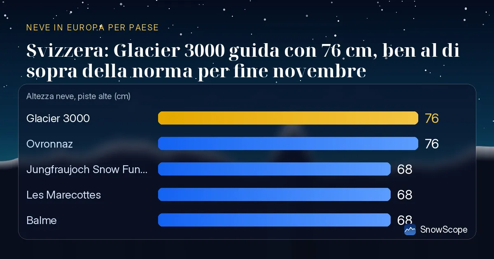
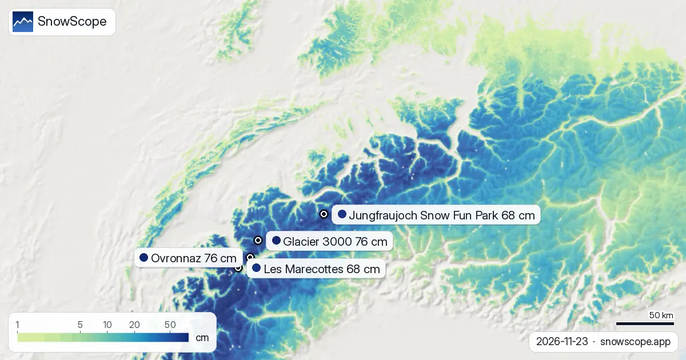
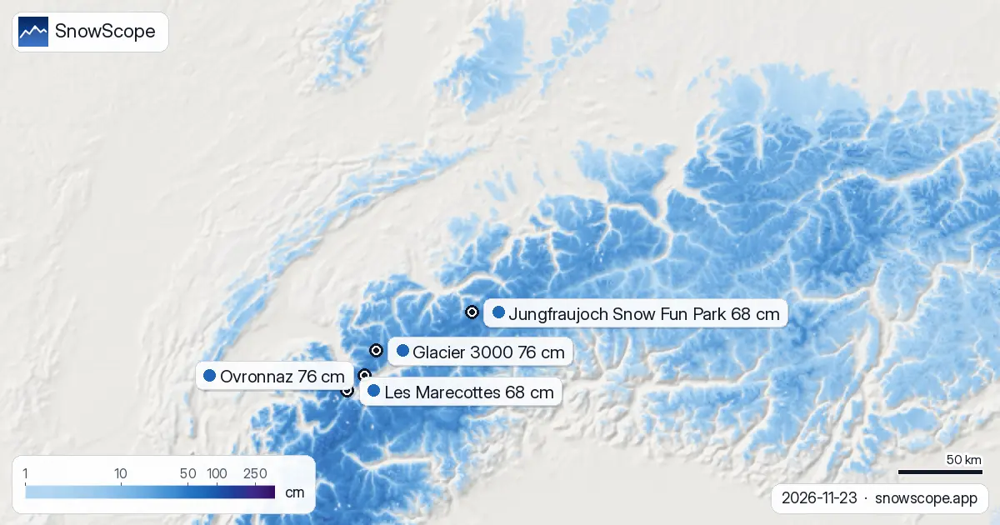

Svizzera: Glacier 3000 guida con 76 cm, ben al di sopra della norma per fine novembre
La Svizzera è ben avanti rispetto alla neve tipica di fine novembre. Glacier 3000 si attesta a 76 cm, una profondità più rara di nove inverni su dieci in questa data.
Le previsioni neve in tempo reale per Glacier 3000 nell'app SnowScopeAltezza neve, allerte powder e mappa 3D, gratis.
Al di sopra della media di nove inverni
Glacier 3000 ora raggiunge 76 cm. Questa profondità è superiore a quella vista sulla montagna il 23 novembre in nove anni degli ultimi dieci. La profondità tipica per questa data è 27 cm, quindi la neve attuale è quasi quattro volte la norma. È il tipo di vantaggio iniziale che stravolge una stagione precoce.
Cinque dei principali comprensori svizzeri stanno andando ben al di sopra della loro media stagionale. Ovronnaz ha 85 cm contro i 22 cm tipici. Les Marecottes e Balme, stazioni più basse nelle Alpi del Vallese e nella catena del Monte Bianco, hanno raggiunto 68-70 cm dai loro normali 28-31 cm di fine novembre. Perfino Jungfraujoch Snow Fun Park, che si trova a un'altitudine dove la neve è sempre abbondante, ha 95 cm quando normalmente ne vede 83 cm in questo periodo.
| Resort | Today | Normal for the date | Share of normal |
|---|---|---|---|
| Glacier 3000 | 76 cm | 20 cm | 380 % |
| Ovronnaz | 76 cm | 20 cm | 380 % |
| Jungfraujoch Snow Fun Park | 68 cm | 59 cm | 115 % |
| Les Marecottes | 68 cm | 27 cm | 252 % |
| Balme | 68 cm | 30 cm | 227 % |

Tre zone calde in tre giorni
Le ultime 72 ore hanno portato 79 cm nella regione. La neve non è caduta uniformemente. L'Oberland Bernese ha raggiunto 144 cm in tre giorni, le Alpi del Vallese 139 cm, e la Svizzera centrale 103 cm. Glacier 3000, che si trova nell'altopiano bernese, ha ricevuto 99 cm in quella finestra e ora guida tutti gli stazioni misurate.
È questo il tipo di raffica che accade quando aria umida colpisce le alte creste da nord. La neve di inizio stagione tende a essere leggera e si assesta rapidamente, ma 144 cm in tre giorni su terreno ripido è un segnale che merita rispetto. La linea della neve si trova a 900 m oggi; al di sotto di essa, la copertura è frammentaria e il terreno sottile è ancora probabile.

L'altitudine fa la differenza
La profondità della neve aumenta rapidamente con l'altitudine. Tra 500 e 1000 m, la media è solo 1 cm e solo il 29 percento del territorio è bianco. Passando a 1000-1500 m, la media raggiunge 7 cm con l'84 percento di copertura. Tra 1500-2000 m, hai 18 cm e copertura quasi completa. Al di sopra di 2000 m, la neve si ispessisce a 24 cm a 2000-2500 m e 36 cm al di sopra di 2500 m, con il 100 percento di copertura.
Questo quadro stratificato racconta la storia di una stagione umida che è arrivata presto alle alte elevazioni ma non si è ancora consolidata in una base stabile ai comprensori più bassi. Rocce, erba e macchie sottili ancora marcano molti pendii al di sotto di 1500 m.
Altre nevicate in arrivo
Nei prossimi tre giorni, la previsione indica fino a 25 cm. Il giorno più nevoso sarà il 25 novembre, con circa 20 cm previsti. La settimana che viene accoglie fino a 29 cm nella finestra di previsione. Questo ritmo non è tipico; significa che le montagne stanno catturando la coda di un sistema attivo che non è comune a fine novembre.
Oltre il settimo giorno, la seconda settimana sembra molto più tranquilla. Solo 3 cm sono previsti tra l'1 e il 7 dicembre. L'attuale impulso di neve è l'evento da seguire e da sciare finché dura.
Tendenza: una settimana di accumulo
Una settimana fa, solo 16100 km² dell'area avevano neve. Ieri erano 21990 km². Oggi sono 23710 km². È un guadagno di 7610 km² in una settimana. Il salto nelle ultime 24 ore da solo è stato di 1720 km², con il 76 percento della regione mappata ora bianca.
Glacier 3000 ha guidato le classifiche per cinque degli ultimi sette giorni. La coerenza mostra che i picchi alti dell'Oberland Bernese sono il perno di questo evento, attirando la maggior parte dell'umidità e ancorano la linea della neve al massimo.
Quello che devi sapere
La neve di inizio stagione è leggera e può nascondere rocce e terreno accidentato, soprattutto al di sotto di 1500 m. Controlla le condizioni locali e consulta il bollettino valanghe ufficiale prima di andare fuori pista. La finestra di neve buona si restringe di nuovo dopo questa settimana, quindi i prossimi giorni sono il momento migliore per il terreno alto dove la profondità e la copertura sono più affidabili.
Consigli per sciatori
- Glacier 3000, Ovronnaz e Jungfraujoch Snow Fun Park sono i leader di profondità; tutti e tre superano 68 cm e si trovano al di sopra di 2195 m dove la copertura è completa.
- Stai al di sopra di 1500 m se vuoi una copertura nevosa continua. Al di sotto di questa altitudine, rocce e macchie sono comuni anche dopo la recente nevicata.
- I prossimi tre giorni aggiungeranno neve, con il 25 novembre il più pesante. Pianifica i tuoi tempi per catturare la neve fresca prima che si assesti.
- La neve di inizio stagione è tipicamente leggera e può nascondere pericoli. Controlla il bollettino valanghe ufficiale prima di sciare fuori pista.
- Questo aumento è raro per la data e non durerà; la settimana dopo il 25 novembre diventa molto più secca.
Su questi numeri
Le altezze neve delle località sono la neve più alta sui pendii superiori alla data indicata; sono stime per un'area, non una misura in un punto. Le previsioni possono cambiare. Leggi sempre il bollettino valanghe ufficiale prima del fuoripista.
Cita questo articolo
Per ricerca, didattica o stampa: numeri e grafici sono liberamente riutilizzabili con licenza CC BY 4.0 citando così.
SnowScope (2026), Svizzera: Glacier 3000 guida con 76 cm, ben al di sopra della norma per fine novembre, https://snowscope.app/blog/it/2026/11/switzerland-rare-early-snow-23-november-2026.html, consultato il 2026-11-23
SnowScope (Atlas Labs). (2026, November 23). Svizzera: Glacier 3000 guida con 76 cm, ben al di sopra della norma per fine novembre. SnowScope snow reports. https://snowscope.app/blog/it/2026/11/switzerland-rare-early-snow-23-november-2026.html
BibTeX
@misc{snowscope2026switzerlandrareearlysnow,
author = {{SnowScope (Atlas Labs)}},
title = {Svizzera: Glacier 3000 guida con 76 cm, ben al di sopra della norma per fine novembre},
year = {2026},
month = nov,
howpublished = {\url{https://snowscope.app/blog/it/2026/11/switzerland-rare-early-snow-23-november-2026.html}},
note = {Published 2026-11-23 14:06 UTC; accessed 2026-11-23}
}· CC BY 4.0 · Metodi, dati e strumenti →
Glacier 3000: neve e temperatura per quota, quest'inverno vs lo scorso (strumenti) →
Segui Glacier 3000
Gratis: un messaggio quando arriva la neve e il meteo ogni mattina.